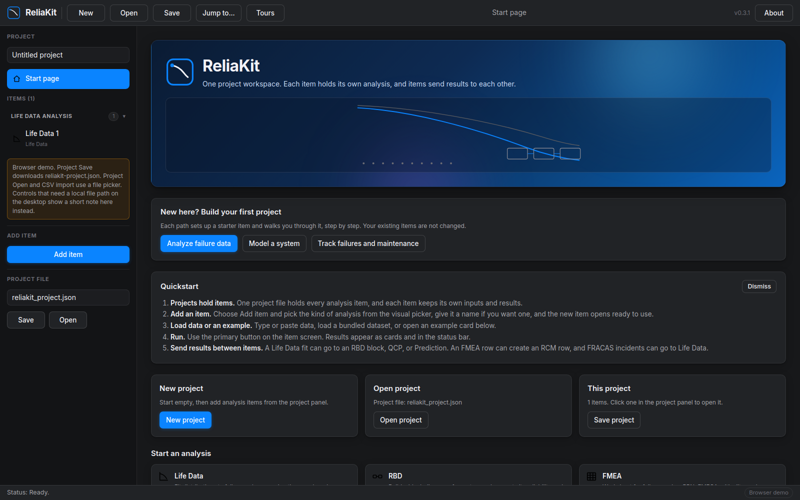
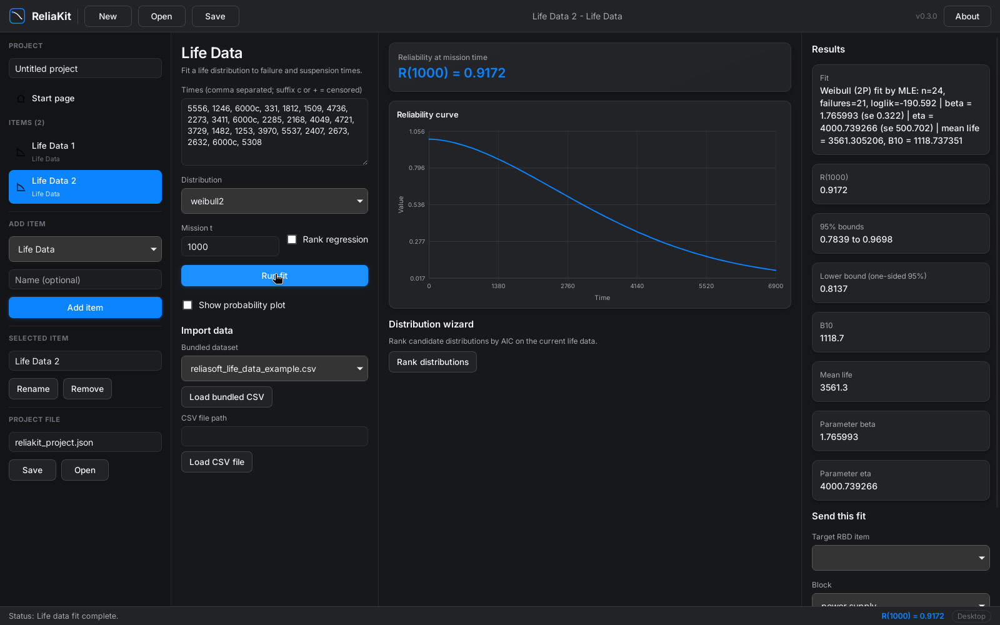
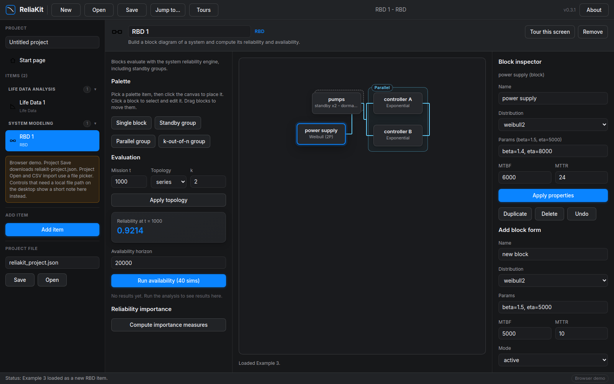
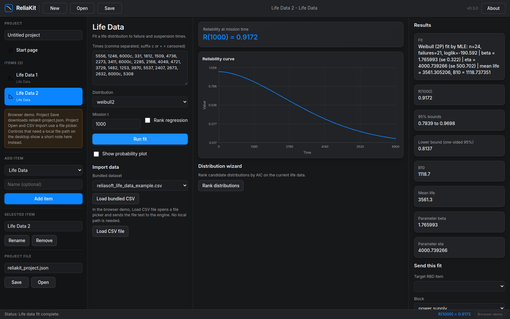

ReliaKit fits life data, builds system diagrams, runs FMEA and warranty forecasts, and predicts failure rates, with every analysis kept as an item in a single project file. Results move between items, so a fit can drive a diagram, a calculator, and a prediction without retyping.
Free and open source under the MIT license. Desktop app for Windows, macOS, and Linux, plus a command line tool. The demo runs the same engine in your browser.
What is inside
Add an item for each analysis. Each item holds its own inputs and results, and the project saves to one JSON file you can keep with the rest of your engineering records.
Fit 14 distributions to failure and suspension times by maximum likelihood or rank regression, with Fisher matrix bounds, probability plots, Kaplan-Meier, and a distribution wizard that ranks candidates by AIC, BIC, and Anderson-Darling.
Small lot methods that stay honest about sample size: Weibull shape bias correction, hierarchical shrinkage, split-conformal bounds, and Bayesian MCMC with R-hat and ESS diagnostics.
Path fits and pseudo-failure times for degradation data, plus accelerated life testing with Arrhenius, inverse power law, and Eyring models, including censored maximum likelihood and step-stress profiles.
Crow-AMSAA, Duane, Gompertz, and Lloyd-Lipow growth models, and cause-specific competing risk fits with cumulative incidence per failure mode.
Series, parallel, and k-out-of-n diagrams with standby groups, dormancy, and switch reliability. CTMC and Monte Carlo availability, plus Birnbaum, criticality, and Fussell-Vesely importance.
Gate trees with top event probability and minimal cut sets, and continuous time Markov models with steady state, transient probabilities, and mean time to absorption.
Design, Process, and System worksheets with RPN and FMECA criticality, DVP&R and control plan export, an RCM worksheet with task selection, and a FRACAS incident log with MTBF summary.
Nevada table aggregation from sales and returns, a Weibull fit to returns, and a forecast of returns for units still in service.
Parts-count and parts-stress prediction, reliability allocation, and derating checks. The MIL-HDBK-217F Notice 2 library is built in from the public handbook. SR-332 and 62380-style methods run on data you supply, and local library files import in CSV.
Two-level factorial designs with effects and sums of squares, plus fractional, Plackett-Burman, Taguchi, and response surface designs. Flowchart simulation gives run time and cost distributions for process networks.
A quick calculation pad for any distribution: reliability, unreliability, hazard, mean life, pdf, and Bx life at a mission time.
Send a Life Data fit to an RBD block, to QCP, or to Prediction. Turn an FMEA row into an RCM row. Export FRACAS incidents to a Life Data item. Six flows in all, each one click from the source item.
Screenshots
The same interface runs as a desktop app and as a live demo in the browser. The demo below is the real engine, compiled to WebAssembly.




Download
Six files: the desktop app and the command line tool for each platform. Source code and build instructions are on GitHub. The full notes are in the v0.3.2 release.
Desktop app (.exe)
Command line (.exe)
The app is unsigned, so SmartScreen may ask you to confirm before the first run.
Desktop app (raw binary)
Command line
The download is a raw binary, not an .app bundle. Mark it executable after downloading, then run it from a terminal.
The desktop app needs the WebKitGTK runtime. Mark the file executable after downloading.